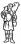

Cei Conferenza episcopale italiana
da pubblicazione allegata al n.671
di "Casabella" settembre 1999
|
 | Cei Conferenza episcopale italiana |
Progetti per la Chiesa di Santa Maria in Zivido di San Giuliano Milanese |
Gabetti Roberto |
Un primo riferimento al sito è parso necessario, prioritario. L'antica piccola chiesa e i deboli segni nel terreno che si osservano intorno erano già elementi – o meglio cenni – positivi, nel senso della definizione di un "paesaggio" naturale, ripreso, costruito. La sottolineatura, talora impercettibile, di alcuni spunti raccolti fra realtà e memoria ha indirizzato il nostro intervento sulla linea di un'estraneità culturale rispetto ai blocchi edilizi realizzati in serie, corpi di fabbrica lunghi e alti presenze, per fortuna, non così vicine. Il nuovo complesso parrocchiale deve – può – essere luogo protetto nei confronti di preesistenze recenti da rifugire. E’ proprio destinato agli abitanti di quelle case che potrebbero trovare in questi nuovi segni sensi di attenzione, di richiamo, di rifugio. Innanzitutto, ci è parso essenziale l'invito ad accedere al volume dominante della chiesa e ai vari servizi attraverso una piazzetta conclusa, un sagrato contornato da portici. Questa corte chiusa protegge dai rumori, dalla dispersione, dai richiami esterni e offre un segno di accoglienza, ospitalità, ricovero. All'interno, la chiesa si presenta come un grande vano unico; sui lati sono disposti i poli delle liturgie della riconciliazione – battistero e confessionali – e i poli per le devozioni particolari. Il battistero è segnato da un fonte contenuto nel palmo di due mani accostate. Nel grande vano, in asse all'ingresso, la visione prevalente è rivolta all'altare. In fondo, il cocifisso in pietra con richiamo alla sofferenza. A un livello un poco più in alto, avanzato rispetto ai gradini che circondano il presbiterio, si trova l'ambone, che porta scolpito il segno della Parola. Il presbiterio è accostato alla parete di fondo, ma, in alternativa, potrebbe essere portato avanti ed essere circondato dai fedeli. la regolazione della luce naturale avviene attraverso filtri minuti: attorno al presbiterio, un ordito trasparente di mattoni disposti a traforo; nella superficie di copertura, piccole aperture filtranti luce attraverso le alte capriate lignee. |

sito di proprietà della Associazione
Culturale Zivido
webmaster@aczivido.net